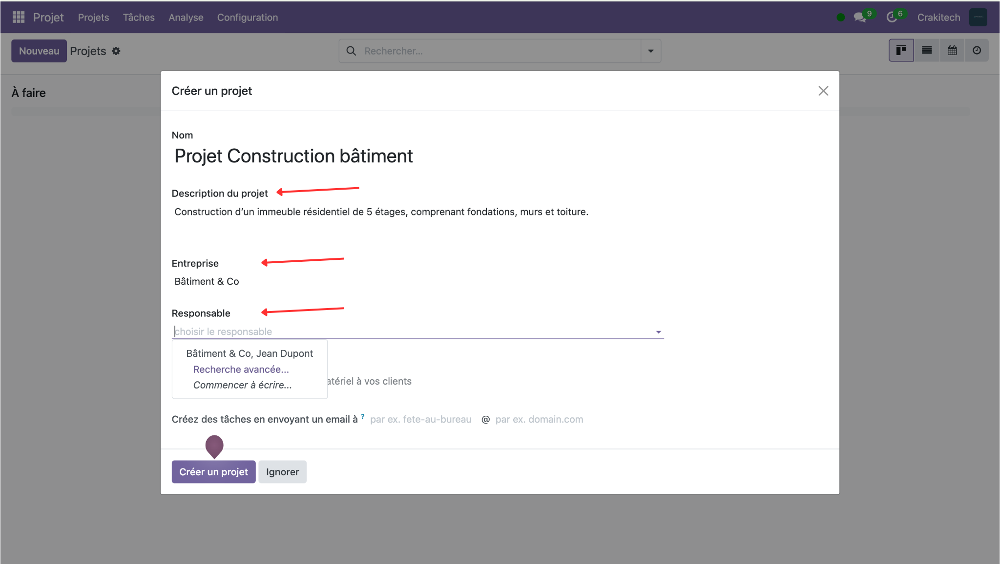
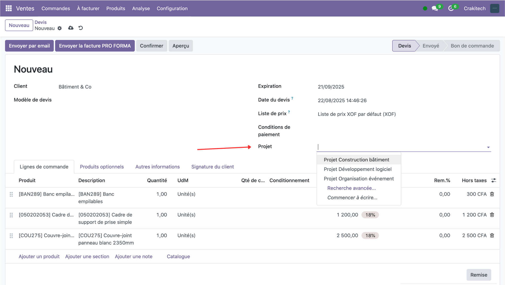
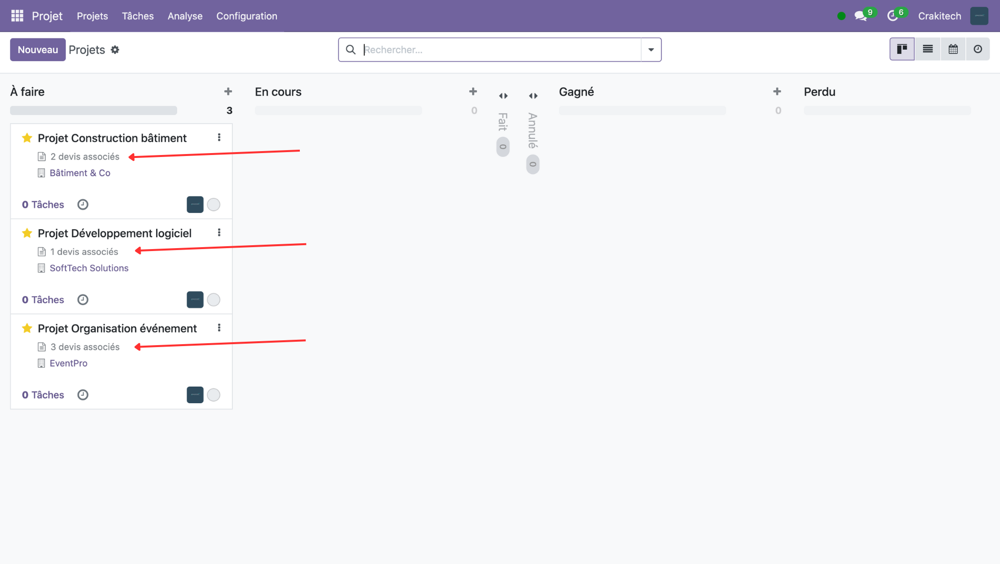
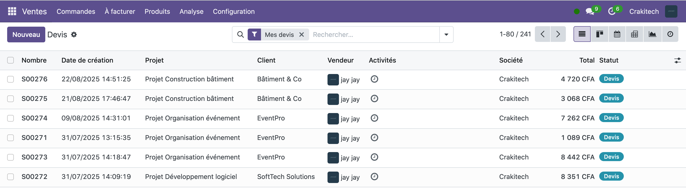

This module allows you to easily link sales quotations to projects and provides a clear, complete, and intuitive view of project progress and related quotations all in one place.
Define the client company, add a description, and assign a project manager. Quick and straightforward!
When creating a quotation, simply select the related project. The connection is made automatically.
Visualize all your projects at a glance with the number of quotations attached to each one.
1️⃣ Project Creation – Form with custom fields (Company, Description, Responsible).

2️⃣ Quotation linked to a project – Example: quotation for the Building Construction project with client Bâtiment & Co.

3️⃣ Kanban view of projects – Overview showing multiple projects with the number of linked quotations.

4️⃣ Quotation with linked project – Ensures every quotation is correctly attached to its project.

Track quotations for electrical, plumbing, and masonry work per construction site.
Example: "Villa Dubois" Project → 5 quotations (electrical, plumbing, tiling...)
Group quotations for catering, venue, and service providers under one project.
Example: "Martin Wedding" → 8 quotations (catering, DJ, flowers, photography...)
Centralize UI/UX, development, and maintenance quotations per client project.
Example: "TechCorp Mobile App" → 4 quotations (design, dev, testing, training)
English: This module simplifies project and quotation management by linking them seamlessly. Get a clear, intuitive, and visual overview of your commercial activities.
Français : Ce module simplifie la gestion des projets et des devis en les liant facilement. Obtenez une vue claire, intuitive et visuelle de vos activités commerciales.